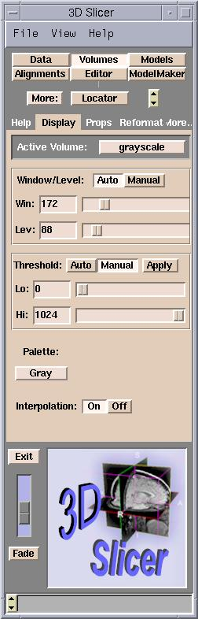

After loading volumes, you can optimize how you view them.
Adjusting Window/Level
By adjusting the Window/Level of the volume, you can optimize displaying the region of interest of gray-scale images. Adjust the Level value until the dark areas become barely visible. Then adjust the Window value so that the bright areas are not saturated into white. You may need to go back and forth to readjust until you have optimally displayed your data.
To adjust the Window/Level of a volume:
